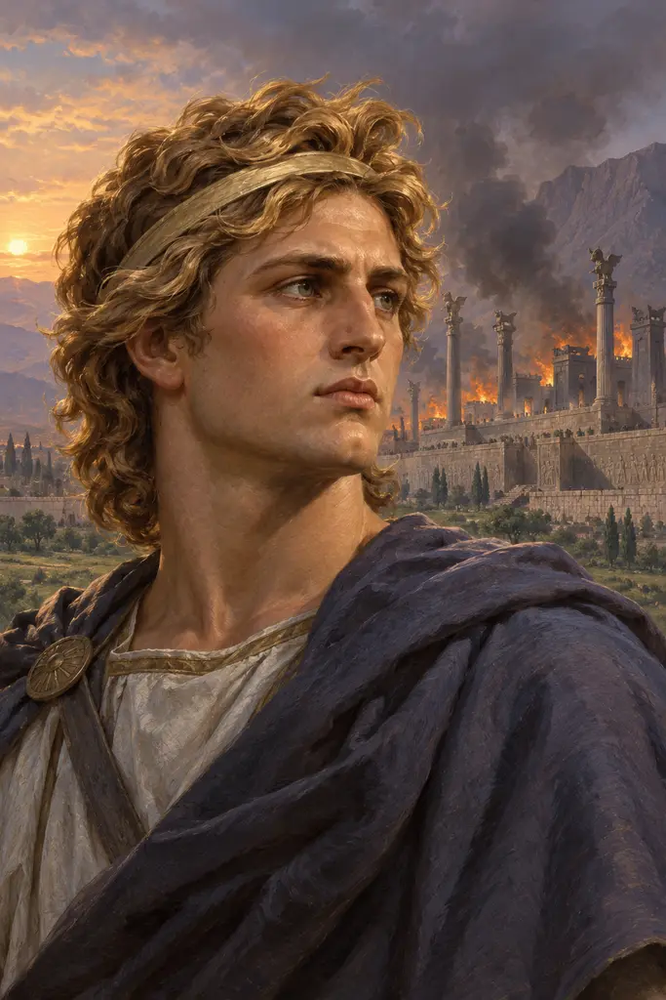
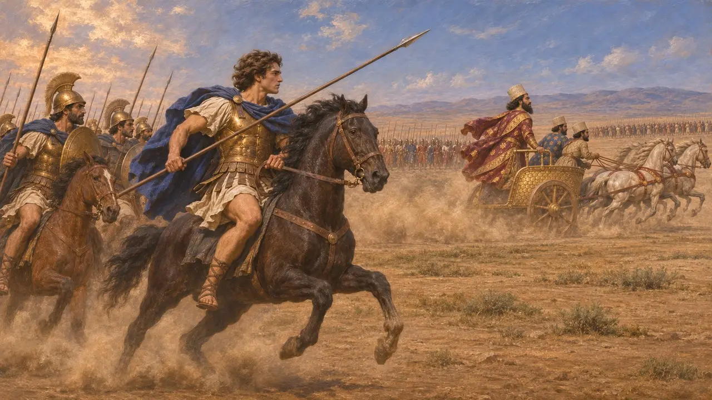
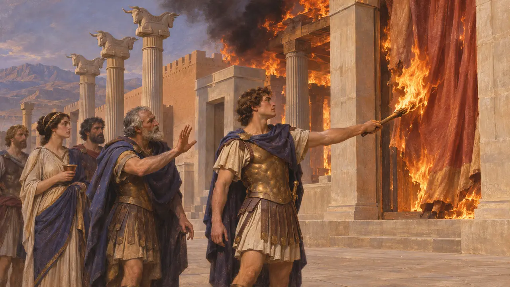
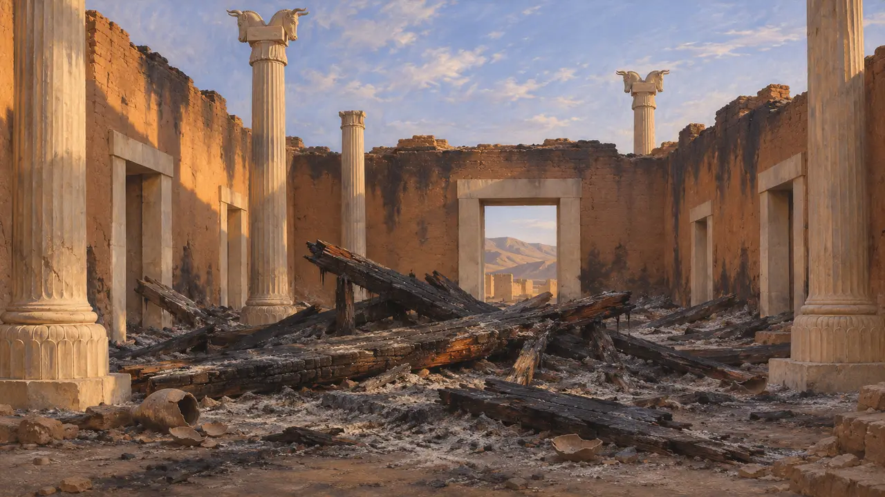
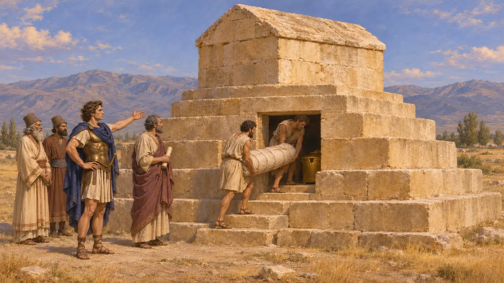
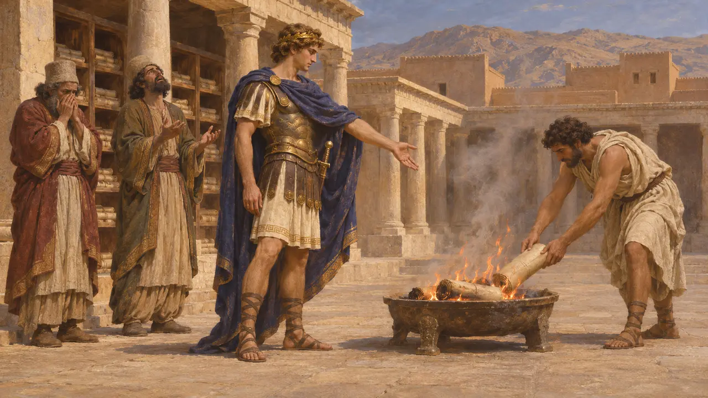

亚历山大大帝
征服阿契美尼德帝国的马其顿国王，公元前336-前323年在位
马其顿的亚历山大三世于公元前334年入侵波斯帝国，四年之内击败大流士三世，夺取诸王城。公元前330年，波斯波利斯的宫殿在他占据期间焚毁；公元前324年，他下令修复帕萨尔加德遭盗掘的居鲁士陵。他的征服终结了阿契美尼德王朝，距普拉提亚之战约一个半世纪。
游戏中： 亚历山大不在本游戏的十一个关卡之内，关卡以公元前479年的米卡勒尾声告终。他仅出现在编年史的一条注释中，讲述波斯波利斯和居鲁士陵后来的命运。

征服帝国
古代记述阿里安生活于公元2世纪，其著述取材于托勒密和阿里斯托布鲁斯已佚的回忆录。他记述了亚历山大于公元前334年渡过赫勒斯滂，并在格拉尼库斯河取胜。随后他于公元前333年在伊苏斯、又于公元前331年在高加米拉击败大流士三世，此后巴比伦和苏萨向他敞开城门。大流士东逃，公元前330年被自己的总督贝苏斯所杀。
Arrian, Anabasis books 1-3

波斯波利斯为何焚毁
争夺中阿里安称，亚历山大不顾帕曼纽的劝阻，蓄意焚毁宫殿，以报复薛西斯洗劫雅典之仇，并评判此举不智。狄奥多罗斯和普鲁塔克则讲述了另一个版本：在一场酒宴上，雅典名妓泰伊丝怂恿国王纵火。这究竟是出于策略、醉后冲动，还是两者兼有，史家至今仍有争论。
Arrian, Anabasis 3.18; Diodorus 17.72; Plutarch, Alexander 38

史料中的踪迹
见于史载20世纪30年代在波斯波利斯的发掘中，于宝库和各大殿内发现了厚厚的焚烧残迹。大火之前，宝库中的珍宝已大多被搬空。一部公元前331年的巴比伦天文日志记下了国王的军队在高加米拉战败，以及亚历山大向巴比伦进逼。这是对这场征服罕见的同时代记录，且并非出自希腊人之手。
E. Schmidt, Persepolis I, 1953 and Persepolis II, 1957; A. Sachs and H. Hunger, Astronomical Diaries and Related Texts from Babylonia I, 1988

修复居鲁士陵
古代记述阿里安在此处依从阿里斯托布鲁斯的记述。他说，公元前324年初，亚历山大从印度回师途中，发现帕萨尔加德的居鲁士陵遭到盗掘，金棺受损，遗体被抛出棺外。他命阿里斯托布鲁斯将遗骸归位、复原陪葬之物并封闭墓门。守陵的麻葛遭到刑讯，却未供出任何罪魁。
Arrian, Anabasis 6.29; Strabo 15.3.7

后世记忆中的伊斯坎达尔
后世传说数百年后编成的希腊《亚历山大传奇》把他塑造成一位四方漫游的英雄，并让他成为埃及法老奈克塔内布之子。波斯史诗，尤其是菲尔多西的《列王纪》，把他说成大流士的异母兄弟。中古波斯语的琐罗亚斯德教文献则将他记为焚毁圣典的“受诅咒的亚历山大”。这些都是后世的形象，而非公元前330年史事的证据。
Pseudo-Callisthenes, Alexander Romance; Ferdowsi, Shahnameh; Arda Wiraz Namag
来源
- Arrian, Anabasis 3.18 and 6.29
- Diodorus 17.72
- Plutarch, Alexander 38
- P. Briant, From Cyrus to Alexander, 2002
- E. Schmidt, Persepolis I, 1953 and Persepolis II, 1957
- A. Sachs and H. Hunger, Astronomical Diaries and Related Texts from Babylonia I, 1988